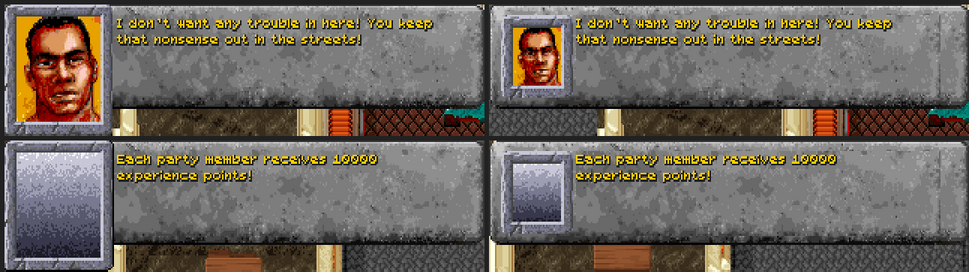
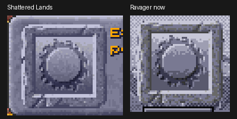
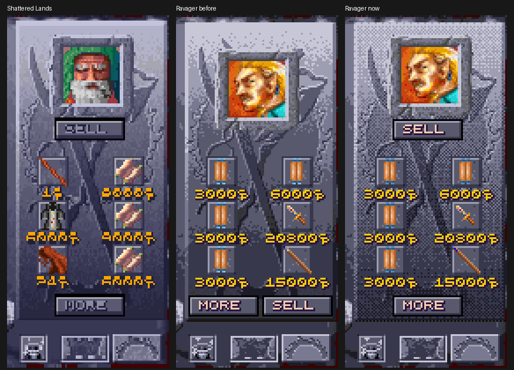

Starting the sequel
Play Wake of the Ravager, beside Play Shattered Lands at the top of the window, or Play Wake of the Ravager.bat, starts it from its folder in the same engine as Shattered Lands (the engine), with the mod's fixes and rules ported to it (below) and the dice log of its fights. When the Loader hasn't found it, the button says so and points to Choose its folder... (starting it). It converts the sequel's roster and saves first (below). Play Wake of the Ravager (in-game rolls).bat starts it with the in-game additions and no Loader window, as Play Dark Sun (in-game rolls).bat does Shattered Lands (a problem said in a message box and written to play.log).
Your sequel saves are converted
Each start from the Loader converts the sequel's roster and saves, in the sequel's own folder: CHARSAVE.GFF (the roster), DARKRUN.GFF, DARKSAVE.GFF, the saves SAVEnn.SAV and the quick saves and autosaves SAVQnn.SAV, each made to hold the Loader's longer character sheet. Each file is copied first as it was, as NAME.42H (CHARSAVE.GFF.42H). A file already converted is left alone; one the game wrote again in its own form (the sequel played without the Loader) is converted again at the next start, and its .42H copy replaced by the newer one. Taking the party across changes the roster too (kept first as CHARSAVE.GFF.BAK). Shattered Lands' files are never converted.
Converted, they are the Loader's: the sequel started by itself can't read them, shows the Loader's items as money bags, and can stop in a fight on the turn of a member with a kit.
To play the sequel without the Loader again (and before you delete the Loader, since this needs it), convert them back: in the Loader's folder run
python -m dsloader.ravager narrow FOLDER
with FOLDER the sequel's. The roster and the saves become the game's again, the weapon specs dropped, each file copied first as NAME.48H. The Loader converts them again at its next start. Or put back a .42H copy by hand (rename it without .42H): the file as it was before that conversion.
Taking the party to Wake of the Ravager
The Options tab's Take the party to Wake of the Ravager... button puts the party of a Shattered Lands save into the sequel's roster, for a game that goes on with the same characters. Choose the save; the save itself is not changed. Then start Wake of the Ravager from the Loader and ADD them on its CREATE CHARACTERS screen. A window lists what came across.
- XP comes across up to Shattered Lands' cap. A member arrives with no more than its share of 749,999 XP (the whole for one class, an equal share for several, a human's the cap less its old classes' levels' XP), so XP banked past the cap in an older save stays behind; the report after the transfer says so (
XP 749,999 (Shattered Lands' cap: 2,000,000 in the save)). - Every item comes across. What the sequel has, it gets as the sequel's own item (as SSI's CHARTRAN does); the rest, which CHARTRAN turns into money bags, the Loader makes for the sequel, with its picture and name from your own Shattered Lands files: the mod's weapons, armour and magic items, and the game's quest items as keepsakes (carried and sold, no use in the sequel's story). Scrolls come across as the sequel's scroll of that spell (a wizard learns a spellbook's spell from its box outside a fight); a spell the sequel lacks makes a keepsake. Weapons a spell made (Shillelagh, Flame Blade, Spiritual Hammer) stay behind. The sequel's own weapons the mod brought into Shattered Lands (the two-handed sword, lotulis, double spear, trikal and javelin, and their magic ones of the same material) go back as the sequel's own weapon of that kind (the darts, wooden, as the mod's own: the sequel's are stone or of no material), and a spec in one of them stays that spec, for the sequel's own weapons of it (In Wake of the Ravager). Every weapon keeps its kind and its material: the metal great sword, lotulis and javelin, the obsidian lotulis and the bone great sword (a fire cleric's Obsidian Lotulis +1, a water cleric's Bone Great Sword +1) are their own types there, with Shattered Lands' damage, weight and who may wield them; and where SSI's own swap gave one of Shattered Lands' weapons another material or kind (a bone Long Sword the sequel's obsidian one, the Great Axe +3 an obsidian axe, the Polearm +1 a double spear, Terror Blade a stone dagger, Bloodwrath a metal sword) the Loader makes it in its own material and kind instead. The sequel had no bone long sword: the Loader adds Shattered Lands' to it. Dragonsbane is metal in both games (SSI made the sequel's obsidian), so Shattered Lands' Dragonsbane crosses as the sequel's own, and there is one of it. A weapon's item box shows its damage against a large foe too, as Shattered Lands' does (
1D8+4/1D12+4; creature size). Its club and bow are wood and its sling leather, as in Shattered Lands (SSI made them of no material), so an earth or water cleric, druid or ranger may use them there too. - Time passes between the games: 3 to 12 months, rolled once. Each member ages a year with a chance of the months in twelve, with the age rule's usual effects.
- The roster: the sequel's own is kept first as CHARSAVE.GFF.BAK (the first time). A character taken across before takes its old place again; the others take free places. With too few free, the Loader says so: delete characters in the sequel first.
The sequel's own party
The sequel's own four (a new game started with no party made) are fitted to the mod as Shattered Lands' own party is, the owner's choices of 2026-11-26. The Loader does so once, when it finds them with no weapon specs and no kit (a game saved before, too), and says so in the dice log:
| Character | Weapon specialization | With kits |
|---|---|---|
| Gerakis, half-giant gladiator | the long sword, the gythka and the trikal | Wild Fighting, as in Shattered Lands |
| Thy'rokh, thri-kreen fighter and fire druid | the gythka (mastery at once: he is a 6th-level fighter) | a Grove Warden's AC: 1 better for every 3 druid levels |
| Terrannus, human earth cleric | the long sword, his kit's chosen weapon spec | a Crusader (a warrior's THAC0, expertise with the long sword, a warrior's extra attacks), at the kit's full cost: one fewer spell slot at each spell level |
| Ar'Anda, elf preserver, psionicist and thief | the Elven Shadow-walker's hiding (never halved in daylight), and she casts in light armour (leather, or of no material), though a multiclass preserver |
Without these, the sequel's level up would ask each of them for weapon specs, as it does in Shattered Lands for a game begun before the rule.
Each one's features of their own are listed on the Effects screen's panel, under the kits and weapon specs, as Shattered Lands' Cilla's are. And whatever the rules, Terrannus, whom the sequel starts with his shield in the right hand (the weapon hand, the one the attacks a round count for) and his long sword in the left, has them swapped as the new game starts.
Saves in the sequel
The sequel's save and load window has more saves as Shattered Lands' does: four pages of ten (SAVE01.SAV to SAVE10.SAV, then SAVB.., SAVC.. and SAVD..) and, in the load window, the QUICK page, turned with PgDn and PgUp or a click on PGUP or PGDN under EXIT (with the page's name: the sequel has no PAGE buttons). It opens on page 1.
Quick save, quick load and autosave work in the sequel too (started from the Loader), with the same switches, in its own save and load window: F9 opens its LOAD window on the quick saves (SAVQ01.SAV to SAVQ10.SAV beside the game's SAVE..), and once it is shut the window is back on the game's own ten (the sequel's own F1 and F2 windows never open on the quick saves). Its autosaves have shorter names, to fit its narrower rows (Auto Day 1, 09:05 Mines 1, Auto Day 1, 00:06 fight). Each quick save keeps its own part of the map's limits, which the sequel stores beside a save, so loading one never takes another save's. There is no camp in the sequel, so no camp autosave. While the switch is on and the Loader is there, F5 is the quick save, not the sequel's own F5 (the sound effects on and off: F4 and the game's menu still have the music, and the menu the sound effects); with the switch off or without the Loader, F5 is the game's again.
Saves under their names work for the sequel too: its ten manual slots are copied into Named saves (Wake of the Ravager) (Page 1 slot 02 - In Tyr.SAV), the Wake of the Ravager's button opens that folder, and a sequel's save put back into a slot is made the Loader's (the bigger character sheets) as it goes in (a game already running lists it from its next start).
The mod in the sequel
- The combat log in the game: L on the map shows the dice log's lines over the sequel's map too, as in Shattered Lands: L again hides it, and its buttons, filters and scrollbar take clicks without the party walking there (until 2026-11-27 a quick click went past it to the game, and in DOSBox-X L could leave it up).
- Kits come across with each character on its character sheet (with its spells and starting age), and work there nearly all whole: their fight rules, spell slots, spells known, PSP costs, hit dice and the gear each forbids or allows (a Ravager's shield and bow are refused). The Effects screen names each kit (
KIT: RAVAGER). A new character takes one from KITS on the creation panel, and a human with no kit is asked for one right after DUAL. The Wanderer and the Spellarcher work only in part: kit by kit. - Weapon specs come across and work there, in all twenty-two (the sequel's Twohand Sword and Crystal sword are two-handed swords). A new fighter, gladiator or ranger picks them on the weapon window after DONE, and its starting weapon becomes a +1 weapon of its first pick's kind, in the weapon hand (the sequel's own gear put it in the left hand, where it swung once a round).
- The new wizard spells come across, and a preserver learns them there at a level up, at creation or from a spellbook: Notaku in Tyr sells one of each (Cat's Grace 6000, the others 3000), and three of the sequel's wizards carry one (the mod's gear).
- The creation screen has STORE and RECALL, and a new character gets fuller starting gear fitted to its kit from the sequel's own items.
- The screens show it all as in Shattered Lands: the DAM lines (the kits' damage and a kit's expertise too), the creation screen's THAC0 (a Scholar's), the Effects screen's weapon kinds and an effect's charges in its name (the Effects screen), and the Look box's whole description of a monster in the dialogue window.
- Choosing an enemy with Tab and Enter works in the sequel's fights, with the red ring and the chance to hit (without the Loader, Tab opens the sequel's own menu).
- The Loader's copy of the sequel gives every character sheet six more bytes for all this, its own characters' too.
- The mod's items work as they did: who may wield them, the spells they cast on a hit or put on their wearer (taken off, the spell ends), the AC and saves of the rings, cloak, bracers and robes, the Veiled Robe's extra spells, the Boots of Speed, the girdles, the Amulet of Magic Resistance and the Tome of Understanding (+1 WIS). The sequel's own rules hold where they differ: Focus Heat burns for 2d6+6. The spell arrows (Chill, Shocking and Vampiric Arrows) cast their spell at the archer's preserver level, as in Shattered Lands; shot by a member with no preserver class they are plain arrows. The tome is read from its box (right-click it in the pack, then its icon) in a fight, on its reader's turn: outside a fight its icon does nothing.
- Hiding in shadows comes too, as in Shattered Lands: in a fight a thief or a ranger with no enemy beside them may hide and move silently, and then their next attack is from behind (a thief's, in melee with a light weapon, a backstab). The Cloak and Boots of Elvenkind work as they did: hidden 95% of the time under the open sky (90% under a roof), silent 95%. Tyr's streets, the forest, the Jann's desert, the Silt Sea islands and the clouds count as daylight.
- Thieves as in AD&D hold in the sequel too: a thief's skills are the Player's Handbook's average for the thief level plus the race's and Dark Sun's DEX adjustment (no more than 95 after armour), the inventory shows those numbers, and a backstab multiplies the weapon's dice only (Enlarge's enlarged dice), STR's bonus and the weapon's plus added once, on the round's first attack; an Assassin's backstab multiplies them once more (x3 to x6), as in Shattered Lands.
- Picking pockets comes too: a thief's Pick Pockets button (the purse, where a cleric's Turn Undead is on the USE screen), then a click on anyone in sight, not in a fight, with the look pointer it gives: made, one small thing (a dagger, a sling, a ring; not a long sword nor anything worn) goes into the thief's backpack, or coins when there is nothing else, the last try on them; failed, a move silently roll to slip away, else caught, and that thief keeps from them until a thief level is gained. A cleric/thief keeps Turn Undead alone (no purse beside it), a right click on the purse shows no description, and there are no weapons worth XP to lift.
- A lock a thief failed is out of reach in the sequel too until that thief gains a level, as in Shattered Lands (with Thieves as in AD&D); the dice log says why.
- Shattered Lands' fixes of the game's own bugs that the sequel shares come with it: a character's most PSP from its own scores, the computer's walls cast across the line of fire, a party thri-kreen's claws and bite that cut, the gladiator's armour optimisation only with armour on, a berserk creature back on its own side as Berserk ends, and the rest (which). The dice log there says when an effect starts and ends (
Thy'rokh gives Paralyzed to Draxan,Controlled ends on Draxan), a member's PSP spent or regained, an ability score changing, and the monsters killed (Draxan is killed, counted in the fight's summary), as in Shattered Lands. - Items weigh what they do in Shattered Lands. SSI left most of the sequel's items weighing nothing, though its program still reads weight as Shattered Lands' does. With the Loader a long sword, a mace, a shield and armour weigh as they do there, so the sequel's own rules (weight and carrying) work again: two heavy weapons (over 3 lb each: metal long swords, maces, axes) can't be held together, the item box says HEAVY, a backstab needs a weapon of 4 lb or less (no great axe, polearm or two-handed sword), and picking pockets goes by weight. The few weapons SSI made oddly light weigh as Shattered Lands' copies of them do (the two-handed sword 15 lb, the lotulis 10). As in Shattered Lands, no load is too heavy and nothing slows a loaded character.
- Weapon traits in the sequel too: the cahulaks' two heads and tangle, the staff sling's stinkpots, the polearm's reach, and on the sequel's own Lotulis, Double Spear and Trikal a specialist's second foe and trip, the trikal reaching two squares. The sequel's Double Spear swings beside its foe: SSI gave it a range of 2 squares, which the game took as a shot (once a round, DEX to hit and no STR damage; a double spear specialist under Computer Control swung once a round from 2 squares); with the Loader its range is 1, as Shattered Lands' double spear's, and it swings at the warrior's rate (In Wake of the Ravager).
- A level cap by XP of its own in the sequel: 5,625,000 XP, shared between a character's classes as Shattered Lands' 749,999 is, in place of the game's stop at 15th. Levels go past the sequel's table (20th) to 30th by AD&D's tables, as far as the share allows: most characters of three classes reach 15th, a fighter alone 30th (the table). THAC0, thief skills, spell slots and saving throws go on by AD&D's tables too (the game held every save at its table's last row, and a psionicist saved as a thief), and a preserver learns spells up to 9th level only: the sequel's four 10th-level spells stay the monsters'. A level up past 20th says "21st", not "21th".
- Shops as in AD&D hold in the sequel too: the party leader's CHA takes 5% (CHA 18) to 40% (25) off what a shop asks, a shop pays 60% of an item's price, and a magical item sold (a plus or a power: a scroll, a ring, a wand...) goes into the merchant's pack, listed again to be bought back. A shopkeeper's own discount in the sequel (Tasarla's for the Veiled Alliance) comes on top.
- Two weapons as in Shattered Lands: -2 in the main hand and -4 in the off hand, DEX's adjustment, one attack a round with the off hand; a ranger has none of it only in light armour (leather, or armour of no material), as in Shattered Lands, where the sequel let a ranger off in any armour. And over the figures, a spell's charge used floats its count as in Shattered Lands (
Armor: 7 left). - Psionic Blast's imagined wounds come back as a fight ends in the sequel too ("Seneca shakes off Psionic Blast's imagined wounds as the fight ends"), and until then a blow that would kill the member knocks it out instead. The dice log's saving throws there show the d20 rolled and each modifier by name, as in Shattered Lands (
d20 = 13 +1 Ring of Protection -1 WIS 6 +1 CON 19 = 14, needs 13), with a natural 1's line that went missing before, and the creation screen's rolls each score's four 4d4 (best of four 4d4 (12, 9, 8, 7) = 12, +4 = 16). Its attack lines break the THAC0 down as Shattered Lands' do (THAC0 13, +3 STR, -2 stone, +2 difficulty = 10), the cahulaks' heads named (-2 cahulaks, main head at DEX 12); a Battle Dancer in light armour has no head penalty with the cahulaks, as in Shattered Lands. - Looting with T and Shift+T, selling with S and M, U and I work in the sequel too (started from the Loader). A body's window opens with the eye (right-click twice). The items go into the backpacks and the dice log names them (
Ar'Anda takes Bow, Stone Lotulis, Bone Brigandine Armor (3), Arrow). S sells the plain gear of the member on show and shuts the shop back to the talk. M is the sequel's own overhead map (its O). No purse sound plays in the sequel. Without the Loader, T and S are the game's keys and leave the window or the shop open. - Scrolling the map with the mouse wheel held down, in fights too (the stock sequel scrolls only at the screen's edge).
- The pointer in scenes, and where it starts: the arrow is on screen in the sequel's films and in the narrated opening after START GAME, and a click skips them (the stock sequel skips its intro only with Shift held about a second, and its opening not at all). The pointer starts in the middle, keeps its place between screens and moves as far up and down as across, as in Shattered Lands. The arrow is Shattered Lands' (the sequel has none of its own for scenes), taken from your Shattered Lands folder each start (a plain arrow without it).
- The sequel's messages are seen: its message box (a scroll's YOU LEARN THE SPELL and the rest, a shop's I COULDN'T SELL THAT) was never on screen, drawn and gone at once; now it stays for the time the game's options set (five seconds at first) while the game waits, or until a click or a key closes it, as in Shattered Lands (NO PATH FROM HERE or NO LINE OF SIGHT need not hold up a fight), and with it a wizard's INT's YOU FAIL TO LEARN THE SPELL and TOO MANY SPELLS OF THAT LEVEL.
- The Loader's Dialogue and Journal tabs follow the sequel: every conversation with the replies offered and the one chosen (
You chose: Who are you?), the speaker named once a talk shows whose face it is (Caravan Master; or name it with Name speaker..., kept apart from Shattered Lands' faces), and each message box in the journal and in the dice log (Message: YOU ALREADY KNOW THIS SPELL). The journal follows the sequel's saves as Shattered Lands' does: its place is kept in the last two of the game's global numbers (the sequel's are at DS:15F6h, saved as SAVE chunk 31), so a game loaded shows its own journal. The Journal tab's Quests list the sequel's own: 42 deeds read from its scripts (the Elder Brain, Helmine in the drakes' nest, Fayina's debt, the halflings of the tunnels and the rest), each listed once its flag is set (the sequel's at DS:15F2h, SAVE chunk 30) or its reward's message is in the journal; most show only once finished (below). The Spells and Memory tools tabs read the sequel's spells and records. The Freeze report reads the sequel too: DSCLOG2 notes where the game was as its timer strikes. - Spells on the Effects screen: a click on a spell's icon leaves it on in the sequel too.
- Squares in reach, F10 and Alt work in the sequel's fights too. On a party member's turn small crosses mark the squares they can still walk to, and R hides or shows them. After the last step the sequel opens its own END MOVE menu (GUARD, WAIT, END TURN), and F10 does nothing while it is up: Escape closes it, and F10 then puts the member back where the turn began, with the move to walk again (
F10: Lex's move taken back (can walk again)). Without the Loader the sequel gives the points back but not the walk, so a click goes nowhere. A member held where they stand (Paralyzed, or Cannot Move) stays there. Out of a fight, holding Alt rings what can be used in gold and names it: things to take, doors, bodies to search, people to talk to. - The sequel's figures drawn in Shattered Lands' style: its people, the party's figures, its creatures, the people lying or sitting in its scenes, the Tarrasque and its three drakes, redrawn to Shattered Lands' size and look (the Shattered Lands party figures, a mul or an elf of the sequel on the same body as Shattered Lands', its elementals Shattered Lands' own). The Loader puts them into its copies of the sequel's files each start (nothing in the sequel's folder changes), with the Mines' dining room laid out again for its smaller furniture. Five soup bowls sit in front of the seated mind flayers, and the redrawn Elderbrain appears in its tank and when the glass breaks. Tyr's tables, chairs, beds and other furniture are lowered to two-thirds of their height for Shattered Lands' steeper view. The Loader also lowers 19 freestanding shelf pictures used in Tyr, the Veiled Alliance headquarters, the Yuan-ti area, Mines 3 and both inhabited volcano levels. Another 61 pictures lower loose furniture and storage in nine regions, including Forest beds, the Mines 1 worktable and the volcano tables and stools. The Forest dining sets, the Veiled Alliance crate and vase, and the two-piece Mines 3 throne now have coordinated heights and placements. The Forest tables and side tables keep the full-sized jugs and dishes on their lowered wood, with the rear chairs visible above them. The Forest’s acorn and grape plants and the cup tables in the Forest and Alliance retain their full-size contents. The same low bed frame appears under Cleave and Snaggle and when the bed is empty. The Mines 3 loot chest, armor chest and chef’s locked chest sit as low as their Pyramid counterpart in both stored lid positions. The three kitchen crates sit lower beside the box of cooking poisons. The five worktables have shorter bases under their bottles and glassware. The set round tables in the Volcano and Alliance rooms carry full-sized bowls and cups on the lowered tabletop. The jugs on the two stocked counter designs retain their shape. The Volcano 2 storeroom barrels meet again. Both Volcano levels have lower silver tables and stools, with the two rolled seats still meeting their tables. The side-facing counters in the Volcano and Alliance rooms have shorter legs under the original jugs and goods. Four stocked shelves are lower while preserving the books and glassware on their boards. The two-piece torn red bed in Volcano 1 and Tyr has a continuous blanket. The Jann camp cushions sit lower around the Sultan, and the Silt Sea Giants’ tables and chairs keep their width at the lower height. The Crypt barracks beds, tables and seats and the Cloud jars use the same proportions. Jumah’s table still partly conceals the key. In the ruined Alliance headquarters, the loose pillows and broken pottery sit against the lowered beds and crates. Both halves of the weapon display line up in the Yuan-ti tunnels and Mines 3. The upright polearm stands in those regions and Volcano 2 sit lower, with their axe tips intact. In Mines 3, the six blue orbs on the lowered shelf keep the shape of the loose floor orbs. In El’s Temple the bowls of the six braziers sit lower beneath their curling smoke. When Tantris rises, the empty throne keeps its lowered height and its place between the braziers. The barrel and sack pile shared by the mines and Tyr sits lower while both barrel lids remain visible over the Tyr wall. The air and fire drakes have been seen fighting on their own maps.
- Shattered Lands' screens and icons in the sequel: the USE screen, the inventory, the status box, the END menu and the other screens the two games share draw Shattered Lands' own pictures (smoother, a little bluer stone), and 221 spell, psionic and button icons are Shattered Lands' drawings of the same thing, taken from your Shattered Lands folder each start and put in the sequel's colours. The MORE and scroll buttons stay the sequel's, since they sit on its own talk boxes. Without a Shattered Lands folder the sequel's own are used. The box "Shattered Lands' screens and icons in Wake of the Ravager", in the Options tab's Wake of the Ravager section, turns it off (from the sequel's next start).
- Class pictures on the inventory: as in Shattered Lands, the inventory shows a full-length picture dressed for the character's classes: a human in the active class's clothes (eight classes, the man and the woman), the dwarf, elf, half-elf, half-giant, halfling and mul in a picture for each class and multiclass, and the thri-kreen in one picture for all its builds. They are Shattered Lands' figures, dressed as there, taken from your Shattered Lands folder each start and put in the sequel's colours that no area changes. The creation screen's full-length picture is the same, for the classes being picked, changing with a class, the race or the sex. Without a Shattered Lands folder the sequel's own pictures are used throughout.
- Talk portraits at Shattered Lands' size: the sequel's faces in its talk and message boxes were 72 by 72 in a box 72 high, the text starting a quarter of the way across. The Loader's copy draws them as Shattered Lands does: a 32 by 32 face in a 48-pixel stone frame at the box's top left, the box 58 high and the text from the same place as Shattered Lands' (five lines, as there). The empty frame at the end of a fight ("Each party member receives ... experience points!") and the merchant's face in a shop are the smaller size too. The faces are the sequel's own, made smaller each start, with the sequel's own frame cut down round them: each small pixel the average colour of the big pixels it covers, put back to the nearest colour the face itself uses, so it is smooth shading as in Shattered Lands' faces, not the big picture's dithering left as speckle (the faces side by side).

With no speaker the frame holds Shattered Lands' stone dark-sun emblem, as there (taken from the player's Shattered Lands with its interface; the sequel's grey wash without it), and the shop's right-hand panel is laid out as Shattered Lands': the merchant's face at the top, SELL under it, MORE alone at the bottom.

- Shadows under the figures in the sequel too: every living creature on the map (the party, the people, the monsters, the drakes and the Tarrasque too; not the dead) casts its see-through shadow on the floor from its feet, laid long toward the lower right, beside the shadows the Loader's copy gives the sequel's walls (it draws none of its own).
- Dust in the sequel too: whoever walks over dirt or sand raises little puffs behind them (Tyr's squares and yards; its grey cobbles and the dark floors indoors take none).
- Magic items' icons shine in the sequel's shops too (they stood still on a shop's screen), and twelve of its own magic items that never shone now do as the others: Dragonsbane, the Toothed Club, the Chatchka +1, the Gloves +3, three magic armours, the Boots, the Amulet, the Ioun Stone, the Necklace and the Rod.
- See-through figures in the sequel too: a party member hidden in shadows in a fight, and anyone invisible (unless the party detects invisibility), is drawn half see-through.
- Preservers' first spells and psionic powers at creation are picked in the sequel too, in place of its own grants (a new 7th-level preserver's ten spells, some at random, and a psionicist's fixed eighteen powers). With the Loader, DONE opens CHOOSE A SPELL for as many as the game would have given, level by level, then PICK A PSIONIC POWER. EXIT leaves the rest to the game, and EDIT keeps the powers of a member whose classes and disciplines stay.

The mod's gear in the sequel
The item tables list every item of the sequel and where it is. Wake of the Ravager has no short sword at all and no magic pick, and few magic great axes, cahulaks, staff slings and polearms. The mod adds 14 magic weapons, +1 to +3, plain-named as the game's own, and puts the 15 plain items the mod brought to Shattered Lands (bone, metal and obsidian short swords, daggers, maces, axes, great axes, picks, polearms, cahulaks and the Bone Helm) in the sequel's shops, on its people and in its chests. Pictures are Shattered Lands', from your copy; the magic ones have a few fire-coloured pixels, which don't shimmer as Shattered Lands' do.
| Item | Where |
|---|---|
| Short Sword +1 | Notaku's stall, Tyr |
| Short Sword +2 | a Draxan in Tyr |
| Short Sword +3 | a body in the Crypt |
| Pick +1 | the receptionist who sells picks |
| Pick +2 | a crate in the third mine level |
| Pick +3 | the silt giants' leader |
| Great Axe +1 | a Draxan in Tyr |
| Great Axe +2 | a Draxan in the Pyramid |
| Cahulaks +1 | Alhena, the Jann's lands |
| Cahulaks +2 | the Runner, the Yuan-ti tunnels |
| Polearm +1 | a guard at the Veiled Alliance's headquarters |
| Polearm +2 | a Draxan, the third volcano level |
| Staff Sling +1 | the ranged-weapon stall, Tyr |
| Staff Sling +2 | Sureshot, in the forest |
The weaponer sells all 13 plain weapons; the armourers the Bone Helm; other stalls a few each. A game saved before has them in its shops too: the Loader stocks each seller once, as you meet it, and what you buy isn't put back (dsloader/shopstock.py); its other people and chests keep what they had. The Bone Helm gives AC 1 with Helms give AC 1, as in Shattered Lands (a transferred one too). Built by the Loader (dsloader/ravgear.py) when the Shattered Lands folder is set.
With the new wizard spells on, Notaku sells a spellbook of each of the six (Cat's Grace 6000, Erdlu Claw, Fogbolt, Reflected Image, Spook and Friends 3000 each: 3000 a level, the sequel's own price), on his list's second and third pages after the Short Sword +1; read from the inventory, a book teaches its spell (not in the shop's screen). Three of the sequel's wizards who carry a spellbook carry one more, Fogbolt, Spook or Reflected Image, as a defiler in Shattered Lands may. In Shattered Lands Kalzith sells Cat's Grace. A game saved before gets them at Notaku's as the weapons (four of the six fit his pack).
The sequel's colours
Wake of the Ravager keeps its own colours (the owner's choice, 2026-11-27). Matching them to Shattered Lands' is a long-term job for the recompiled program (its plan's Phase 10): a tone grade toward Shattered Lands' lighter, warmer look, applied where the picture goes to the screen, and later Shattered Lands' interface art drawn in its own exact colours. It depends on the sequel playing in the recompiled program past the start of Tyr. Why the mod doesn't do it here: the two games number their 256 colours differently, so Shattered Lands' palettes can't simply be used in the sequel, and no palette slot is free in every one of the sequel's areas (a count over every picture, the redrawn figures included). That leaves no room for Shattered Lands' interface greys, which is why its interface art is matched to the sequel's nearest colours.
Not in the sequel yet
The mod's rule is that both games get each change. These are the parts of the mod that Shattered Lands has and the sequel does not yet, each checked against the Loader's code (2026-11-28):
- What the party wears: the party wears its class outfits on the map and in a fight (2026-11-27), but not yet its worn gear over them, a second member with the same figure (they share the first's picture), nor the hair greying with age. The party column's and the creation screen's small figures wear the outfits too.
- Spells: Restore Youth, the mod's Whirlwind damage and Sunstroke's heat (the sequel casts its own Whirlwind and Sunstroke), and so a Healer cleric's two more cosmos spells.
- The cahulaks' tangle goes by size alone: Shattered Lands spares the shapeless (a shadow, a dust devil, an elemental) and a few creatures by name, the sequel only the half-giants and the large (its creatures).
- The DAM lines leave out a thri-kreen's chatkcha throws.
- The Journal tab's open quests: the sequel's 42 quests show once finished; five show while open (the errands someone asks for: most of the rest are finds and fights no one asks for). Of its scripts' other awards, eight are left out because what earns them wasn't established (the rest are small finds, talk checks and the like, each with its reason in
dsloader/ravquests.py). - The game's bugs the mod mends in Shattered Lands but not yet in the sequel: GAME-BUGS.md.